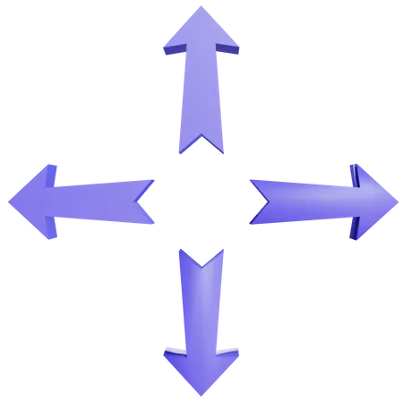

Use custom camera-based controls for playing PacMan.
No webcam found. To use this demo, use a device with a webcam.
Loading the mobilenet model...
Click here to add the current view as the direction input
0 examples
0 examples

0 examples
0 examples
Steps to play
Train the model for each control. Like if you wanna train for up, look up and click at "Add sample" in the up arrow.
You can also hold the squares to continuously click the pictures. 25-40 good photos will be more than enough, do this for all four directions.
Then click on the "Train Model" button, and after the training is done, you can click on the "Play" button. The game will start and you can use your trained actions.